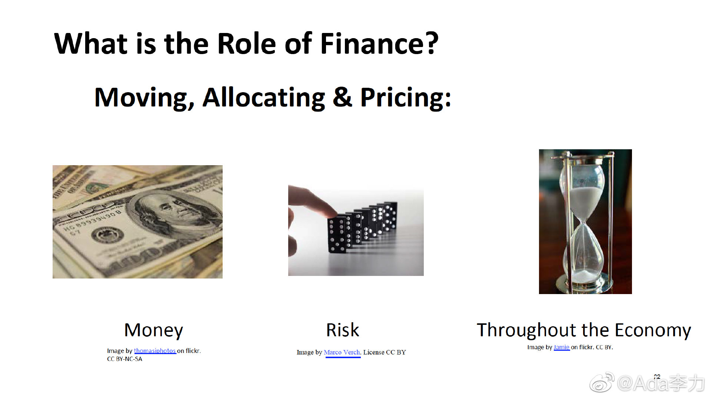

#一个人的企业#
了解新领域最好的方式是跟高手近距离取经。
我以前有个误区，认为经典书籍比高手演讲更值得看，前者是浓缩并且精心编辑的知识，而后者发言往往很随性。但后来越来越发现，有时候你的困惑和问题，从有体系的知识里并不容易找到答案，而高手个性化的解释，倒容易给人茅塞顿开的感觉。
比如Gary在解释金融的三个角色时，谈到“Throughout the Economy"时，用图上的沙漏做例子，金融类似沙漏中间的那个瓶颈，实际上是“rent of the economy" - 经济的租金。我马上联想到的是马云曾经说过，最好的商业模式，是收租金的那种。金融行业成为经济各行各业中的顶级，没有比租金这个词解释得更明白了。
了解新领域最好的方式是跟高手近距离取经。
我以前有个误区，认为经典书籍比高手演讲更值得看，前者是浓缩并且精心编辑的知识，而后者发言往往很随性。但后来越来越发现，有时候你的困惑和问题，从有体系的知识里并不容易找到答案，而高手个性化的解释，倒容易给人茅塞顿开的感觉。
比如Gary在解释金融的三个角色时，谈到“Throughout the Economy"时，用图上的沙漏做例子，金融类似沙漏中间的那个瓶颈，实际上是“rent of the economy" - 经济的租金。我马上联想到的是马云曾经说过，最好的商业模式，是收租金的那种。金融行业成为经济各行各业中的顶级，没有比租金这个词解释得更明白了。
- 